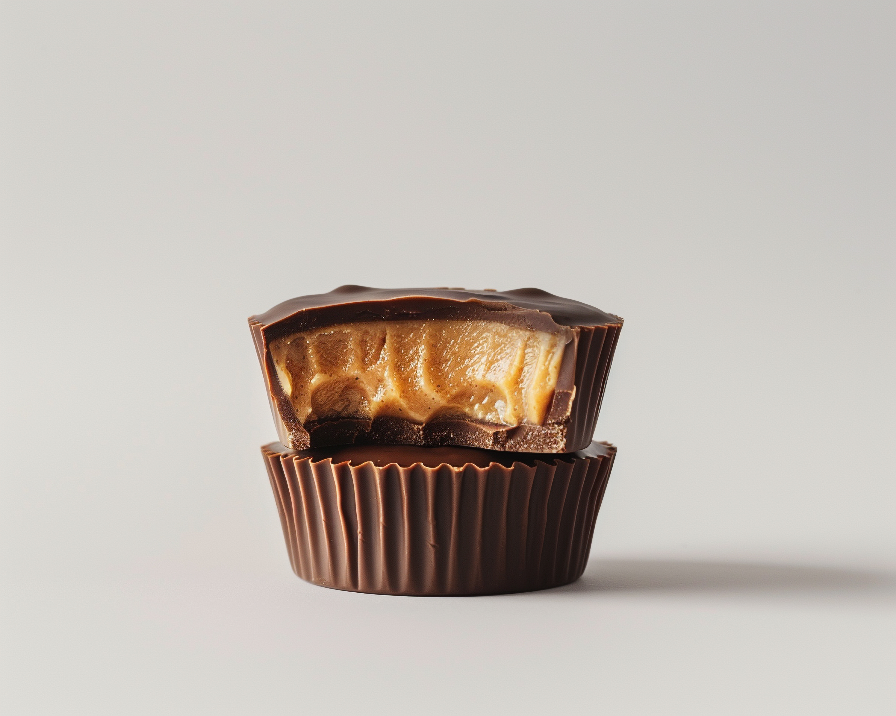

Homemade Peanut Butter Cups

Food Stock photos by Vecteezy
Description
Tired of spending money on Reese's at the store? Make your own cups at home! They're cheaper and better.
Let's face it, chocolate and peanut butter is a match made in heaven. And you can make it with fresh, quality ingredients. You'll never want to go back to the mass-produced stuff again.
Ingredients
- your favorite brand of chocolate chips
- natural peanut butter
- powdered sugar
- cupcake molds
Steps
- Pour 1/2 cup of choclate chips in a microwave-safe bowl
- Melt choclate slowly 10 seconds at a time
- Mix peanut butter with desired quanity of sugar in a seperate bowl
- Pour a thin layer of melted chocolate in your cupcake molds and place them in the fridge for 15 min
- Add peanut butter mixture to the molds and pour remaining melted chocolate on top
TIP: Keep the chocolate layer as thin as you can to prevent it from becoming too crunchy
- Put back in fridge for 15 min then let sit at room temp. for 5 min and enjoy!
Home